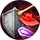

Яростный рефлекс
Открыть в интерактивной вики →
Описание
Переполняющий персонажа гнев значительно улучшает рефлекс и позволяет уклоняться от следующих атак с выбранной зоны. Каждое такое уклонение имеет шанс отразить часть урона, который должен был быть нанесен (не больше 10% макс. количества ОЗ противника). Кроме того, эффект поглощает пассивный урон ценой заряда, вне зависимости от того, с какой зоны он был наложен.
Тип: бафф
Тип: бафф
Уровни навыка
| Уровень навыка | Требуемый уровень | Шанс отразить урон | Отраженный урон | Уменьшение полученного пассивного урона | Отбитые атаки | Раунды |
|---|---|---|---|---|---|---|
| I | 10 | +10% | 60% | -100 ОЗ | +1 | 2 |
| II | 11 | +12% | 60% | -125 ОЗ | +1 | 2 |
| III | 12 | +14% | 60% | -150 ОЗ | +1 | 2 |
| IV | 13 | +16% | 60% | -175 ОЗ | +1 | 2 |
| V | 14 | +18% | 60% | -200 ОЗ | +2 | 2 |
| VI | 15 | +20% | 60% | -225 ОЗ | +2 | 2 |
| VII | 16 | +22% | 60% | -250 ОЗ | +2 | 2 |
| I | 17 | +24% | 60% | -285 ОЗ | +2 | 2 |
| II | 18 | +26% | 60% | -320 ОЗ | +2 | 2 |
| III | 19 | +28% | 60% | -355 ОЗ | +2 | 2 |
| IV | 20 | +30% | 60% | -390 ОЗ | +3 | 2 |
| V | 21 | +32% | 60% | -425 ОЗ | +3 | 2 |
| VI | 22 | +35% | 60% | -460 ОЗ | +3 | 2 |
| VII | 23 | +45% | 60% | -500 ОЗ | +3 | 2 |